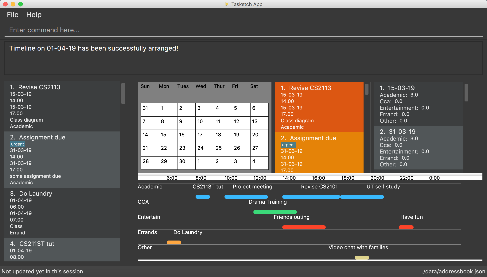

By: T09-2 Since: Feb 2019 Licence: MIT
- 1. Introduction
- 2. How to use this guide
- 3. Quick Start
- 4. Daily Time Planner
- 4.1. Adding a task:
add/a - 4.2. Listing all tasks :
list/l - 4.3. Editing a task :
edit/e - 4.4. Searching tasks by keywords:
find/f - 4.5. Deleting a task :
delete/d - 4.6. Clearing all tasks :
clear/c - 4.7. Listing entered commands :
history/h - 4.8. Undoing previous command :
undo/u - 4.9. Redoing the previously undone command :
redo/r - 4.10. Showing time spent on all task categories :
showTime
- 4.1. Adding a task:
- 5. Reminder
- 6. View calender
- 7. Getting wrong command suggestions
- 8. Automatically complete input command for user
- 9. Viewing help :
help - 10. Exiting the program :
exit - 11. FAQ
- 12. Command Summary
1. Introduction
Tasketch is an application that helps you to manage your everyday time by giving you an overview of all the time planned
for all the tasks in a daily manner. It also helps you to be aware of all the tasks dateline too.
This application is designed for the busy NUS students who have many tasks, assignments and datelines everyday.
Tasketch uses minimal (GUI) elements, instead opting for a faster Command Line Interface (CLI) while maintaining the
benefits of the GUI. So, if you are used to the command line, Tasketch is sure to help manage your time effectively.
This user guide will introduce the features of Tasketch and show you how to use all the command lines.
Interested? Jump to the Section 3, “Quick Start” to get started. Enjoy!
2. How to use this guide
There are several terms which we use throughout the guide. To make your understanding clearer, you can read the following section to ensure that you are able to use this user guide to the fullest.
Command Format
-
Some commands have an alias, which you can also use to execute the command e.g. to add a task to Tasketch, you can type either
clearorc. -
Words in
UPPER_CASEare the parameters to be supplied by the user e.g. inadd n/TASK,TASKis a parameter which can be used asadd n/Do MA1101R tutorial. -
Parameters can be in any order e.g. if the command specifies
sd/START_DATE ed/END_DATE,ed/END_DATE sd/START_DATEis also acceptable. -
The format for dates is
dd-mm-yy. For example:25-03-19means March 25th, 2019. -
The format for times is
hh.mmand it is using 24-hour clock. For example:13.00means 1 o’clock in the afternoon.
3. Quick Start
-
Ensure you have Java version
9or later installed in your Computer. -
Download the latest
tasketch.jarhere(the link needs to be changed). -
Copy the file to the folder you want to use as the home folder for your Tasketch.
-
Double-click the file to start the app. The GUI should appear in a few seconds.
 -
Type the command in the command box and press Enter to execute it.
e.g. typinghelpand pressing Enter will open the help window. -
Some examples you can try:
-
list: lists all the tasks you have added -
addn/Do CS2113 sd/17-03-19 sd/10.00 ed/17-03-19 et/12.00 d/Do User Guide: adds a new task to Tasketch. -
delete3: deletes the task with index 3 in Tasketch. -
exit: exits the app
-
4. Daily Time Planner
This feature will help you to monitor your time spent on different tasks in a day. By looking at the time spent on different tasks, it aims to help you to plan your time better so that you will not spend most time on specific type of a task.
4.1. Adding a task: add/a
To get started, you will need to add a task into Tasketch. The format is as below.
When you are adding a task, the app will ensure that there will be no duplicate names added. This is to ensure that there is no confusion in the task names.
Adding a task with the same start date and end date means that it is a daily task, will be monitored by the Daily Time Planner. Different dates means it is a long period task, thus will not be considered as daily task.
The app will not able to verify the correctness for the number of days in different months, so you have to ensure that
the date exists in that particular month. However, the app will able to differentiate the maximum number of days and months.
This means that you will never be able to enter more than 31 days and more than 12 months in the start date and end date.
Should you enter different start date and end date, the app will ensure that your end date is after the start date.
As for start time and end time, the app is smart enough to inform you when you have entered invalid time, such as 24.00, as this is incorrect. You will not able to enter hours beyond 23 and minutes beyond 59. The app will also ensure that the end time is after start time too. This to ensure the time spent/duration calculation (end time - start time) will result correct values.
You will also need to specify the type of category of the task that you are adding for the Daily Time Planner to monitor your time effectively.
If any of the above is violated, the app will alert you that it is an invalid command with the corrected format shown to you.
| A task can have any number of tags (including 0) |
Format: add n/TASK_NAME sd/START_DATE st/START_TIME ed/END_DATE et/END_TIME d/DESCRIPTION c/CATEGORIES [t/TAG]…
Examples:
-
add n/CS2113 task sd/13-03-19 st/12.00 ed/13-03-19 et/14.00 d/Talk about version control
Adds a task named CS2113 task in the app. It starts at 12:00 on March 13rd, 2019 and it ends at 14:00 on the same day. The description for this task is to talk about version control. -
add n/MA1101R tutorial sd/14-03-19 st/12.00 ed/14-03-19 et/14.00 d/Tutorial 8 c/a
Adds a task named MA1101R tutorial. It starts at 12:00 on March 14th, 2019 and ends at 14:00 on the same day. Its description is tutorial and it category is academic. -
add n/CS3235 lecture sd/13-03-19 st/08.00 ed/13-03-19 et/10.00 d/Talk about network security t/important
Adds a task named CS3235 lecture. It starts at 8:00 in March 3rd, 2019 and ends at 10:00. Its description is to talk about network security. The tag for it is 'important'.
Result:
You should see the task added into the task list on the left of the app.
The time duration on that task will be calculated in the back and the time should be reflected in the day list on the right
of the app (UI in development)
4.2. Listing all tasks : list/l
Shows a list of tasks in Tasketch.
Format:
-
list
Lists all the tasks of today -
list DATE
Lists all the tasks of that specific date
Examples:
-
list 02-2019
Lists all the tasks in February, 2019 -
list 20-02-2019
Lists all the tasks in February 20th, 2019 -
list
Lists all the tasks in the storage
4.3. Editing a task : edit/e
Sometimes, you might have added a task information wrongly or wish to change its information. This command will allow you to edit all existing tasks in Tasketch.
Since the Daily Time Planner only includes tasks that start and end on the same date. Editing the start date and end date of a task will also lead to some changes.
-
Changing from same start and end date to different dates will remove the task from Daily Time Planner, its corresponding time duration will also be deducted.
-
Changing from different start and end date to same dates will make it a daily task, thus to be included into the Daily Time Planner, its corresponding time duration will also be added.
-
Maintaining the same start and end dates but changed the start or end time of a task. Its time duration changes will also be updated in the Daily Time Planner.
Format: edit TASK_ID [n/NAME] [st/START_TIME] [et/END_TIME] [d/DESCRIPTION]
Examples:
-
edit 1 st/12.00 et/14.00 t/GET1018 tut
Edits the start time and end time of the task with ID 1 to be12.00and14.00respectively. Change the topic toGET1018 tut.
4.4. Searching tasks by keywords: find/f
Finds tasks whose topic or description contain any of the given keywords.
Format: search KEYWORD [MORE_KEYWORDS] …
Examples:
-
find CS2113T
ReturnsCS2113T lecture -
f Lecture
ReturnsCS2113T lectureandCS3235 lecture
4.5. Deleting a task : delete/d
Deletes the specified task from Tasketch.
Format: delete INDEX_NUMBER
Examples:
-
list
delete 1
Deletes the task with index number 1 in task list. -
find cs2113t
delete 1
Deletes the task with index number 1 in task list.
4.6. Clearing all tasks : clear/c
If you have done with the tasks, simply clear them from the Tasketch, so that they will not disrupt your time planning.
Format:
-
clear
Clears all the tasks in Tasketch -
clear DATE
Clears all the tasks starting from the specified date
Examples:
-
clear 21-02-2019
Clears all the tasks which start from February 21st, 2019. -
clear 02-2019
Clears all the tasks which start from February, 2019. -
clear before
Clears all the tasks which finished before today. -
clear
Clears all the tasks in the storage.
Result:
The tasks of your date choice should be cleared from the task list on the left of the app.
The correspond time duration for those tasks will be deducted from the Daily Time Planner.
4.7. Listing entered commands : history/h
Lists all the commands that you have entered in reverse chronological order.
Format: history
4.8. Undoing previous command : undo/u
Restores the Tasetch to the state before the previous undoable command was executed.
Format: undo
Examples:
-
delete 1
list
undo(reverses thedelete 1command) -
delete 1
clear
undo(reverses thedelete 1command)
undo(reverses theclearcommand)
4.9. Redoing the previously undone command : redo/r
Reverses the most recent undo command.
Format: redo
Examples:
-
delete 1
undo(reverses thedelete 1command)
redo(reapplies thedelete 1command) -
delete 1
redo
Theredocommand fails as there are no undo commands executed previously. -
delete 1
clear
undo(reverses theclearcommand)
undo(reverses thedelete 1command)
redo(reapplies thedelete 1command)
redo(reapplies theclearcommand)
4.10. Showing time spent on all task categories : showTime
(UI in development)
To help you to plan and make full use of your daily time better, simply use this command to see all the time planned on all 5 categories for every day.
4.10.1. Showing all the days
If you want to the time planned for everyday, just use this command.
Format: showTime
Result:
You should see a list of days with all the category times on the right side of the app.
4.10.2. Showing a particular day
If you want to see only one specific day, simply add the date that you wish to see behind the command.
Format: showTime DATE
Result:
You should see a day of your choice with all the category times on the right side of the app, if the date exists.
5. Reminder
5.1. Reminding the users of the nearest task : remind
Shows to the user the nearest tasks of certain category.
Format:
-
remind start
Reminds the users of most recently begin tasks of all categories. -
remind ddl
Remind the users of most recent deadline of all categories. -
remind a/e/c/r/o ddl/start
Remind the users of most recent start tasks or deadline of specified category.
Examples:
-
remind e start
Shows a list of nearest start tasks of "entertainment" category.
6. View calender
6.1. Set the calendar to desired month : month
Shows the desired month to the user.
Format:
-
month +
Changes the current calendar to next month. -
month -
Changes the current calendar to previous month.
7. Getting wrong command suggestions
There so many commands in the app, so to help you to use the app easier, it will tell you what you have typed wrongly automatically,
by giving a list of closest approximations of word through the message box after pressing enter.
Examples：
-
If you want to type
clearbut typedclarrinstead, the system will tell you that it is an unknown command, and would suggest the commandclearinstead. -
If you want to type
exitbut typedecotinstead, the system will tell you that it is an unknown command, and would suggest the commandexitandeditinstead. -
If you want to type
historybut typedhsitryoinstead, the system will tell you that it is an unknown command, and would suggest the commandhistoryinstead.
8. Automatically complete input command for user
If you type something wrongly, the app will automatically correct type error and fulfill their incomplete typed command in command line.
Examples：
-
If you want to type
list, you can typeliinstead, and presstapon keyboard. The system will automatically fulfill the command in command line withlist. -
If you want to type
histoy, but you typehistoyinstead, and presstapon keyboard. The system will automatically fulfill the command line withhistory. -
If you want to type
add, but you typeaefwinstead, and presstapon keyboard. The system will automatically fulfill the command line withNo command matched.
9. Viewing help : help
In case you are clueless, you can always use this command get help on all the commands available and their functions.
Format: help
10. Exiting the program : exit
If you are done using the app, you just use this command to exit and close the app.
Format: exit
10.1. Saving the data
Tasketch data is saved in the hard disk automatically after any command that changes the data.
There is no need to save manually.
11. FAQ
Q: How do I transfer my data to another Computer?
A: Install the app in the other computer and overwrite the empty data file it creates with the file that contains the data of your previous Address Book folder
12. Command Summary
-
Add :
add n/TASK_NAME sd/START_DATE st/START_TIME ed/END_DATE et/END_TIME d/DESCRIPTION [c/CATEGORY] [t/TAG]…
e.g.add n/CS2113 sd/13-03-19 st/12.00 ed/13-03-19 et/14.00 d/Talk about version control c/a -
Clear :
clear [DATE]
e.g.clear 21-02-2019 -
Delete :
delete INDEX_NUMBER
e.g.delete 1 -
Edit :
edit INDEX_NUMBER [s/START_TIME] [e/END_TIME] [t/TOPIC] [d/DESCRIPTION]
e.g.edit 1 s/12.00 e/14.00 t/GET1018 tut -
Search :
search KEYWORD [MORE_KEYWORDS]
e.g.search CS2113T -
List :
list [DATE]
e.g.list 02-2019 -
Showtime :
showtime [DATE]e.g.showtime 13-02-2019 -
History :
history -
Undo :
undo -
Redo :
redo -
Help :
help -
Exit :
exit